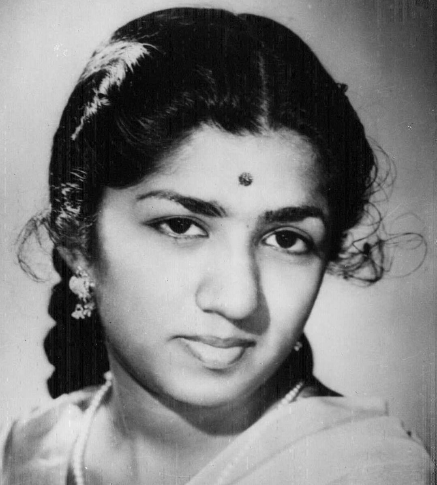

1929 — 2022

"Music is my life, and I live for my music."
Lata Mangeshkar was one of India's greatest playback singers. She recorded thousands of songs in multiple Indian languages and became known as the "Nightingale of India".
She received Bharat Ratna, Padma Bhushan and Padma Vibhushan. Her voice shaped Indian cinema music for over seven decades.